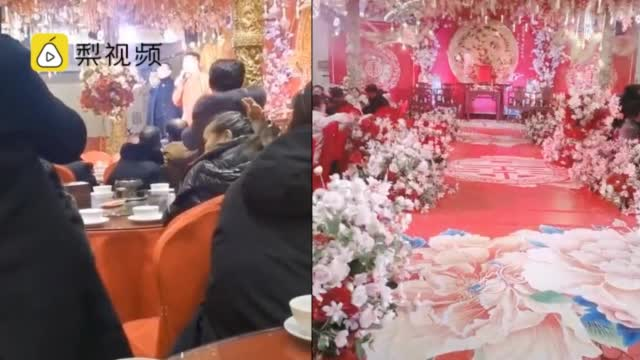
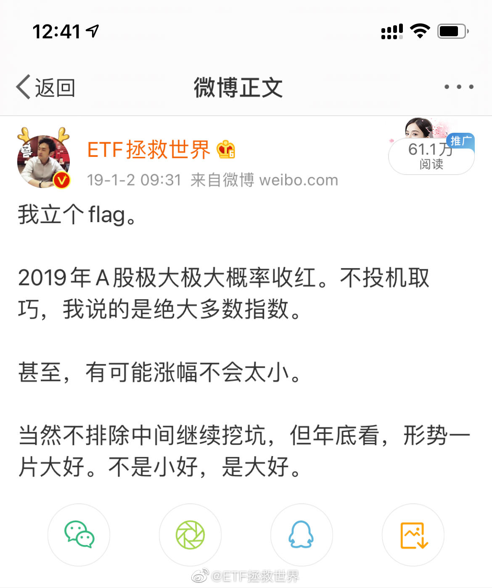
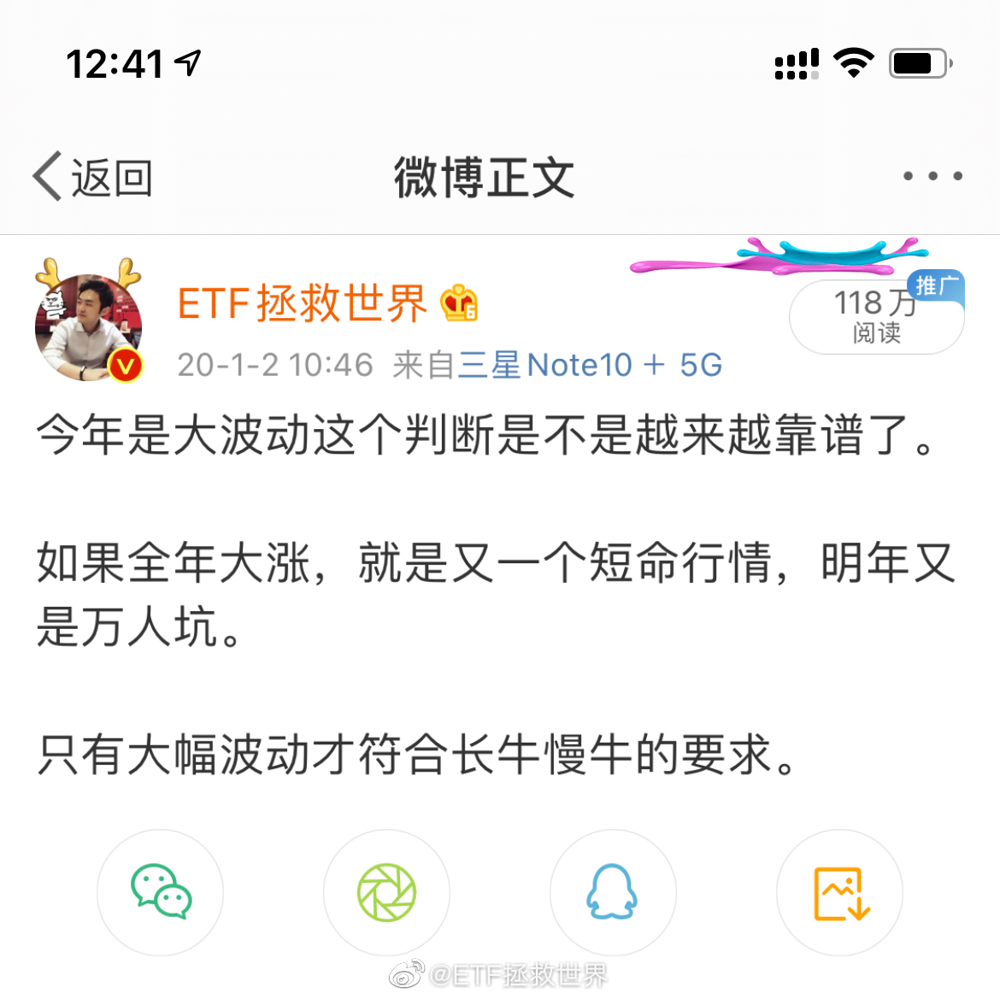

？？？？？？？？！@网易财经:【#婚庆公司谈买内衣不合适迎亲被拒#：双方都有难处，男方将起诉女方】#小伙因买内衣不合适迎亲被拒# 1月2日，网曝贵州遵义一新郎因为给女方的“从头礼”内衣买小了，接亲遭拒，盛大的中式婚宴秒变新年联欢会。婚庆公司负责人称，起因是内衣买小了，之后双方协商时出现问题，但女方也有难处，并称男方将起诉女方。一手Video的秒拍视频 280万次播放 03:03
回复@恬淡蝼蚁:如果1000万每年6%，就是60万收入。也就是说，正常工薪阶层的收入应该是60万/年？现在的人都怎么了？//@恬淡蝼蚁:真的不够。1000刚能过上正常工薪阶层生活。//@ETF拯救世界:月收入不到一万的人在网上说500万不够花。@21世纪经济报道:【财经投投看：如果中了5000万，你会立刻离职吗？ 】知乎上曾有一个“中五百万怎么花”的热门老梗，很多人说干脆离职，但也有人说500万还是不够花，如果再加个0呢？今天#中了5000万会立刻离职吗#引起网友热议。如果是你，怎么选择呢？#西贝董事长称年轻人应该首选北上广# 网页链接
月收入不到一万的人在网上说500万不够花。@21世纪经济报道:【财经投投看：如果中了5000万，你会立刻离职吗？ 】知乎上曾有一个“中五百万怎么花”的热门老梗，很多人说干脆离职，但也有人说500万还是不够花，如果再加个0呢？今天#中了5000万会立刻离职吗#引起网友热议。如果是你，怎么选择呢？#西贝董事长称年轻人应该首选北上广# 网页链接
2020年的判断对于全市场来说是非常精确的。年初大跌，年中大涨，下半年又跌。年末A股涨幅中位数只有2%。所以长牛会继续。但是有部分板块暴涨，它们在今年就会出现我去年初判断的暴涨后的万人坑。@ETF拯救世界:2021年，有几个板块会在最后的疯狂后放烟花。从最高点算，跌幅三五十个点不会让人感动惊讶。 
 】#小伙因买内衣不合适迎亲被拒# 1月2日，网曝贵州遵义一新郎因为给女方的“从头礼”内衣买小了，接亲遭拒，盛大的中式婚宴秒变新年联欢会。婚庆公司负责人称，起因是内衣买小了，之后双方协商时出现问题，但女方也有难处，并称男方将起诉女方。
】#小伙因买内衣不合适迎亲被拒# 1月2日，网曝贵州遵义一新郎因为给女方的“从头礼”内衣买小了，接亲遭拒，盛大的中式婚宴秒变新年联欢会。婚庆公司负责人称，起因是内衣买小了，之后双方协商时出现问题，但女方也有难处，并称男方将起诉女方。 一手Video的秒拍视频
一手Video的秒拍视频